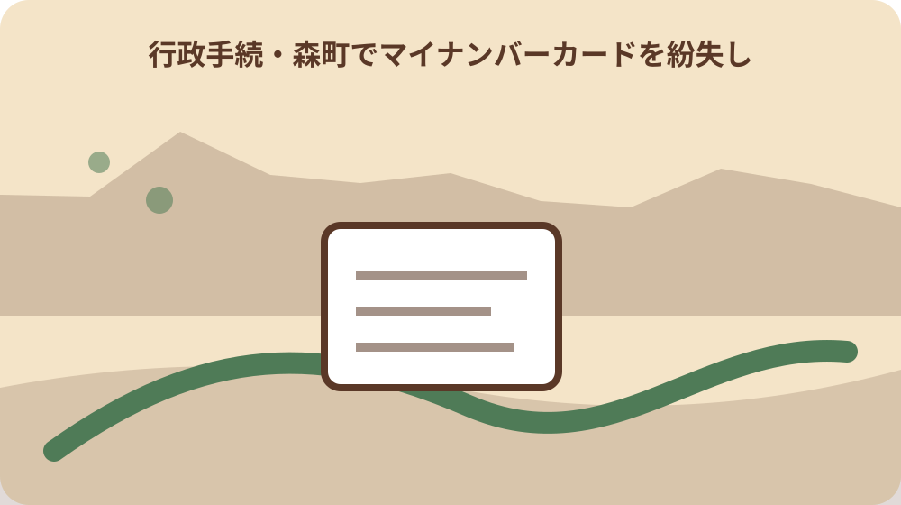
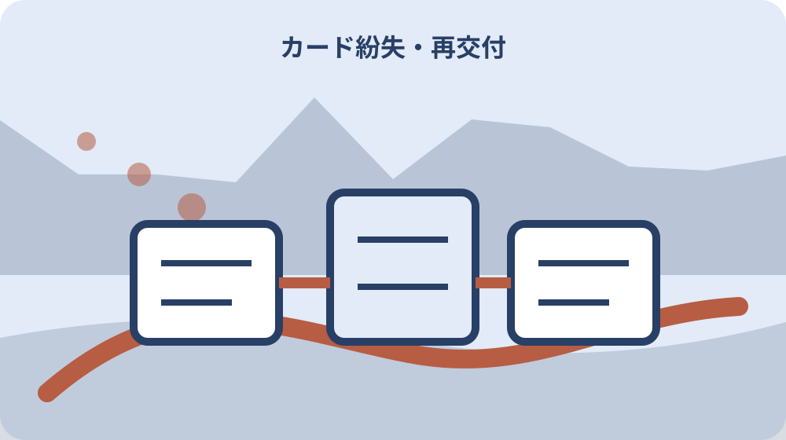

先に結論を確認する
この記事の答え：紛失日時と最後の利用を記録するため、対象者、基準日、公式資料、未確認事項を最初の一行へ置きます。
森町で最初に照合する条件：森町公式の内容が異なる二つの案内を2026-08-13に確認する
紛失日時と最後の利用を記録する
「紛失日時と最後の利用を記録する」の1段落では、紛失日時と最後の利用を記録するでは、マイナンバーカード紛失時はカード機能の一時停止を速やかに行います。「紛失日時と最後の利用を記録する」の1段落では、まず今回の対象者、基準日、手元資料を照合票の同じ行に置きます。「紛失日時と最後の利用を記録する」の1段落では、森町でマイナンバーカード紛失時の停止・警察届・再交付をつなぐは制度名だけを写す記事ではなく、今回の一件がどの条件に当たるかを家族と窓口が追える形にするための手順です。
「紛失日時と最後の利用を記録する」の2段落では、紛失日時と最後の利用を記録するを進めるときは、公式案内の記載と家族が把握している事情を左右に分けます。「紛失日時と最後の利用を記録する」の2段落では、根拠として確認できるのは「マイナンバーカード紛失時はカード機能の一時停止を速やかに行います」までです。「紛失日時と最後の利用を記録する」の2段落では、資料にない個別判断は未確認欄へ残し、都合のよい結論で埋めません。
「紛失日時と最後の利用を記録する」の3段落では、紛失日時と最後の利用を記録するに使う書類には、発行元、発行日、対象者、番号の種類を付記します。「紛失日時と最後の利用を記録する」の3段落では、次の「一時停止連絡を最優先にする」へ渡す項目だけを選び、原本、写し、画面保存を同じ証拠として扱わないことが、後日のやり直しを減らします。
「紛失日時と最後の利用を記録する」の4段落では、紛失日時と最後の利用を記録するの窓口質問は、現在の状態、確認した公式資料、知りたい一点の順に短くします。「紛失日時と最後の利用を記録する」の4段落では、回答を受けたら担当部署、回答日、再確認が必要な条件を追記し、口頭回答だけで完了印を付けないようにします。
一時停止連絡を最優先にする
「一時停止連絡を最優先にする」の1段落では、一時停止連絡を最優先にするでは、外出先で紛失した場合は警察へ遺失届を提出して受理番号を控えます。「一時停止連絡を最優先にする」の1段落では、まず今回の対象者、基準日、手元資料を家族記録の同じ行に置きます。「一時停止連絡を最優先にする」の1段落では、森町でマイナンバーカード紛失時の停止・警察届・再交付をつなぐは制度名だけを写す記事ではなく、今回の一件がどの条件に当たるかを家族と窓口が追える形にするための手順です。
「一時停止連絡を最優先にする」の2段落では、一時停止連絡を最優先にするを進めるときは、公式案内の記載と家族が把握している事情を左右に分けます。「一時停止連絡を最優先にする」の2段落では、根拠として確認できるのは「外出先で紛失した場合は警察へ遺失届を提出して受理番号を控えます」までです。「一時停止連絡を最優先にする」の2段落では、資料にない個別判断は未確認欄へ残し、都合のよい結論で埋めません。
「一時停止連絡を最優先にする」の3段落では、一時停止連絡を最優先にするに使う書類には、発行元、発行日、対象者、番号の種類を付記します。「一時停止連絡を最優先にする」の3段落では、次の「自宅内紛失と外出先紛失を分ける」へ渡す項目だけを選び、原本、写し、画面保存を同じ証拠として扱わないことが、後日のやり直しを減らします。
自宅内紛失と外出先紛失を分ける
「自宅内紛失と外出先紛失を分ける」の1段落では、自宅内紛失と外出先紛失を分けるでは、一時停止とカード再交付申請は別の段階です。「自宅内紛失と外出先紛失を分ける」の1段落では、まず今回の対象者、基準日、手元資料を受付記録の同じ行に置きます。「自宅内紛失と外出先紛失を分ける」の1段落では、森町でマイナンバーカード紛失時の停止・警察届・再交付をつなぐは制度名だけを写す記事ではなく、今回の一件がどの条件に当たるかを家族と窓口が追える形にするための手順です。
「自宅内紛失と外出先紛失を分ける」の2段落では、自宅内紛失と外出先紛失を分けるを進めるときは、公式案内の記載と家族が把握している事情を左右に分けます。「自宅内紛失と外出先紛失を分ける」の2段落では、根拠として確認できるのは「一時停止とカード再交付申請は別の段階です」までです。「自宅内紛失と外出先紛失を分ける」の2段落では、資料にない個別判断は未確認欄へ残し、都合のよい結論で埋めません。
「自宅内紛失と外出先紛失を分ける」の3段落では、自宅内紛失と外出先紛失を分けるに使う書類には、発行元、発行日、対象者、番号の種類を付記します。「自宅内紛失と外出先紛失を分ける」の3段落では、次の「警察の遺失届受理番号を控える」へ渡す項目だけを選び、原本、写し、画面保存を同じ証拠として扱わないことが、後日のやり直しを減らします。

警察の遺失届受理番号を控える
「警察の遺失届受理番号を控える」の1段落では、警察の遺失届受理番号を控えるでは、森町は個人番号カードの概要と手続きを公式ページで案内しています。「警察の遺失届受理番号を控える」の1段落では、まず今回の対象者、基準日、手元資料を確認票の同じ行に置きます。「警察の遺失届受理番号を控える」の1段落では、森町でマイナンバーカード紛失時の停止・警察届・再交付をつなぐは制度名だけを写す記事ではなく、今回の一件がどの条件に当たるかを家族と窓口が追える形にするための手順です。
「警察の遺失届受理番号を控える」の2段落では、警察の遺失届受理番号を控えるを進めるときは、公式案内の記載と家族が把握している事情を左右に分けます。「警察の遺失届受理番号を控える」の2段落では、根拠として確認できるのは「森町は個人番号カードの概要と手続きを公式ページで案内しています」までです。「警察の遺失届受理番号を控える」の2段落では、資料にない個別判断は未確認欄へ残し、都合のよい結論で埋めません。
「警察の遺失届受理番号を控える」の3段落では、警察の遺失届受理番号を控えるに使う書類には、発行元、発行日、対象者、番号の種類を付記します。「警察の遺失届受理番号を控える」の3段落では、次の「森町へ再交付条件を相談する」へ渡す項目だけを選び、原本、写し、画面保存を同じ証拠として扱わないことが、後日のやり直しを減らします。
森町へ再交付条件を相談する
「森町へ再交付条件を相談する」の1段落では、森町へ再交付条件を相談するでは、森町のカード交付案内で窓口と受取方法を確認できます。「森町へ再交付条件を相談する」の1段落では、まず今回の対象者、基準日、手元資料を一件カードの同じ行に置きます。「森町へ再交付条件を相談する」の1段落では、森町でマイナンバーカード紛失時の停止・警察届・再交付をつなぐは制度名だけを写す記事ではなく、今回の一件がどの条件に当たるかを家族と窓口が追える形にするための手順です。
「森町へ再交付条件を相談する」の2段落では、森町へ再交付条件を相談するを進めるときは、公式案内の記載と家族が把握している事情を左右に分けます。「森町へ再交付条件を相談する」の2段落では、根拠として確認できるのは「森町のカード交付案内で窓口と受取方法を確認できます」までです。「森町へ再交付条件を相談する」の2段落では、資料にない個別判断は未確認欄へ残し、都合のよい結論で埋めません。
「森町へ再交付条件を相談する」の3段落では、森町へ再交付条件を相談するに使う書類には、発行元、発行日、対象者、番号の種類を付記します。「森町へ再交付条件を相談する」の3段落では、次の「本人確認書類を集め直す」へ渡す項目だけを選び、原本、写し、画面保存を同じ証拠として扱わないことが、後日のやり直しを減らします。
本人確認書類を集め直す
「本人確認書類を集め直す」の1段落では、本人確認書類を集め直すでは、再交付では本人確認書類と紛失状況を示す資料を求められる場合があります。「本人確認書類を集め直す」の1段落では、まず今回の対象者、基準日、手元資料を引継ぎ表の同じ行に置きます。「本人確認書類を集め直す」の1段落では、森町でマイナンバーカード紛失時の停止・警察届・再交付をつなぐは制度名だけを写す記事ではなく、今回の一件がどの条件に当たるかを家族と窓口が追える形にするための手順です。
「本人確認書類を集め直す」の2段落では、本人確認書類を集め直すを進めるときは、公式案内の記載と家族が把握している事情を左右に分けます。「本人確認書類を集め直す」の2段落では、根拠として確認できるのは「再交付では本人確認書類と紛失状況を示す資料を求められる場合があります」までです。「本人確認書類を集め直す」の2段落では、資料にない個別判断は未確認欄へ残し、都合のよい結論で埋めません。
「本人確認書類を集め直す」の3段落では、本人確認書類を集め直すに使う書類には、発行元、発行日、対象者、番号の種類を付記します。「本人確認書類を集め直す」の3段落では、次の「再交付手数料の有無を確認する」へ渡す項目だけを選び、原本、写し、画面保存を同じ証拠として扱わないことが、後日のやり直しを減らします。
再交付手数料の有無を確認する
「再交付手数料の有無を確認する」の1段落では、再交付手数料の有無を確認するでは、紛失理由によって再交付手数料の扱いが異なるため窓口で確認します。「再交付手数料の有無を確認する」の1段落では、まず今回の対象者、基準日、手元資料を窓口メモの同じ行に置きます。「再交付手数料の有無を確認する」の1段落では、森町でマイナンバーカード紛失時の停止・警察届・再交付をつなぐは制度名だけを写す記事ではなく、今回の一件がどの条件に当たるかを家族と窓口が追える形にするための手順です。
「再交付手数料の有無を確認する」の2段落では、再交付手数料の有無を確認するを進めるときは、公式案内の記載と家族が把握している事情を左右に分けます。「再交付手数料の有無を確認する」の2段落では、根拠として確認できるのは「紛失理由によって再交付手数料の扱いが異なるため窓口で確認します」までです。「再交付手数料の有無を確認する」の2段落では、資料にない個別判断は未確認欄へ残し、都合のよい結論で埋めません。
「再交付手数料の有無を確認する」の3段落では、再交付手数料の有無を確認するに使う書類には、発行元、発行日、対象者、番号の種類を付記します。「再交付手数料の有無を確認する」の3段落では、次の「カード発見時の連絡先を聞く」へ渡す項目だけを選び、原本、写し、画面保存を同じ証拠として扱わないことが、後日のやり直しを減らします。
カード発見時の連絡先を聞く
「カード発見時の連絡先を聞く」の1段落では、カード発見時の連絡先を聞くでは、停止後にカードが見つかった場合の再開方法を問い合わせます。「カード発見時の連絡先を聞く」の1段落では、まず今回の対象者、基準日、手元資料を期限台帳の同じ行に置きます。「カード発見時の連絡先を聞く」の1段落では、森町でマイナンバーカード紛失時の停止・警察届・再交付をつなぐは制度名だけを写す記事ではなく、今回の一件がどの条件に当たるかを家族と窓口が追える形にするための手順です。
「カード発見時の連絡先を聞く」の2段落では、カード発見時の連絡先を聞くを進めるときは、公式案内の記載と家族が把握している事情を左右に分けます。「カード発見時の連絡先を聞く」の2段落では、根拠として確認できるのは「停止後にカードが見つかった場合の再開方法を問い合わせます」までです。「カード発見時の連絡先を聞く」の2段落では、資料にない個別判断は未確認欄へ残し、都合のよい結論で埋めません。
「カード発見時の連絡先を聞く」の3段落では、カード発見時の連絡先を聞くに使う書類には、発行元、発行日、対象者、番号の種類を付記します。「カード発見時の連絡先を聞く」の3段落では、次の「電子証明書の状態も確認する」へ渡す項目だけを選び、原本、写し、画面保存を同じ証拠として扱わないことが、後日のやり直しを減らします。
電子証明書の状態も確認する
「電子証明書の状態も確認する」の1段落では、電子証明書の状態も確認するでは、カード搭載の電子証明書が使える状態か再交付後に確認します。「電子証明書の状態も確認する」の1段落では、まず今回の対象者、基準日、手元資料を資料束の同じ行に置きます。「電子証明書の状態も確認する」の1段落では、森町でマイナンバーカード紛失時の停止・警察届・再交付をつなぐは制度名だけを写す記事ではなく、今回の一件がどの条件に当たるかを家族と窓口が追える形にするための手順です。
「電子証明書の状態も確認する」の2段落では、電子証明書の状態も確認するを進めるときは、公式案内の記載と家族が把握している事情を左右に分けます。「電子証明書の状態も確認する」の2段落では、根拠として確認できるのは「カード搭載の電子証明書が使える状態か再交付後に確認します」までです。「電子証明書の状態も確認する」の2段落では、資料にない個別判断は未確認欄へ残し、都合のよい結論で埋めません。
「電子証明書の状態も確認する」の3段落では、電子証明書の状態も確認するに使う書類には、発行元、発行日、対象者、番号の種類を付記します。「電子証明書の状態も確認する」の3段落では、次の「健康保険証利用への影響を整理する」へ渡す項目だけを選び、原本、写し、画面保存を同じ証拠として扱わないことが、後日のやり直しを減らします。

健康保険証利用への影響を整理する
「健康保険証利用への影響を整理する」の1段落では、健康保険証利用への影響を整理するでは、健康保険証利用など連携サービスの代替手段を用意します。「健康保険証利用への影響を整理する」の1段落では、まず今回の対象者、基準日、手元資料を判断表の同じ行に置きます。「健康保険証利用への影響を整理する」の1段落では、森町でマイナンバーカード紛失時の停止・警察届・再交付をつなぐは制度名だけを写す記事ではなく、今回の一件がどの条件に当たるかを家族と窓口が追える形にするための手順です。
「健康保険証利用への影響を整理する」の2段落では、健康保険証利用への影響を整理するを進めるときは、公式案内の記載と家族が把握している事情を左右に分けます。「健康保険証利用への影響を整理する」の2段落では、根拠として確認できるのは「健康保険証利用など連携サービスの代替手段を用意します」までです。「健康保険証利用への影響を整理する」の2段落では、資料にない個別判断は未確認欄へ残し、都合のよい結論で埋めません。
「健康保険証利用への影響を整理する」の3段落では、健康保険証利用への影響を整理するに使う書類には、発行元、発行日、対象者、番号の種類を付記します。「健康保険証利用への影響を整理する」の3段落では、次の「大石の視点：番号だけの紛失と混ぜない」へ渡す項目だけを選び、原本、写し、画面保存を同じ証拠として扱わないことが、後日のやり直しを減らします。
大石の視点：番号だけの紛失と混ぜない
「大石の視点：番号だけの紛失と混ぜない」の1段落では、大石の視点：番号だけの紛失と混ぜないでは、デジタル庁はマイナンバーカードの安全な利用と紛失時対応を案内しています。「大石の視点：番号だけの紛失と混ぜない」の1段落では、まず今回の対象者、基準日、手元資料を照合票の同じ行に置きます。「大石の視点：番号だけの紛失と混ぜない」の1段落では、森町でマイナンバーカード紛失時の停止・警察届・再交付をつなぐは制度名だけを写す記事ではなく、今回の一件がどの条件に当たるかを家族と窓口が追える形にするための手順です。
「大石の視点：番号だけの紛失と混ぜない」の2段落では、大石の視点：番号だけの紛失と混ぜないを進めるときは、公式案内の記載と家族が把握している事情を左右に分けます。「大石の視点：番号だけの紛失と混ぜない」の2段落では、根拠として確認できるのは「デジタル庁はマイナンバーカードの安全な利用と紛失時対応を案内しています」までです。「大石の視点：番号だけの紛失と混ぜない」の2段落では、資料にない個別判断は未確認欄へ残し、都合のよい結論で埋めません。
「大石の視点：番号だけの紛失と混ぜない」の3段落では、大石の視点：番号だけの紛失と混ぜないに使う書類には、発行元、発行日、対象者、番号の種類を付記します。「大石の視点：番号だけの紛失と混ぜない」の3段落では、次の「停止から受取まで一件記録にする」へ渡す項目だけを選び、原本、写し、画面保存を同じ証拠として扱わないことが、後日のやり直しを減らします。
停止から受取まで一件記録にする
「停止から受取まで一件記録にする」の1段落では、停止から受取まで一件記録にするでは、個人番号を記した紙の紛失とカード本体の紛失を同じ手続にしません。「停止から受取まで一件記録にする」の1段落では、まず今回の対象者、基準日、手元資料を家族記録の同じ行に置きます。「停止から受取まで一件記録にする」の1段落では、森町でマイナンバーカード紛失時の停止・警察届・再交付をつなぐは制度名だけを写す記事ではなく、今回の一件がどの条件に当たるかを家族と窓口が追える形にするための手順です。
「停止から受取まで一件記録にする」の2段落では、停止から受取まで一件記録にするを進めるときは、公式案内の記載と家族が把握している事情を左右に分けます。「停止から受取まで一件記録にする」の2段落では、根拠として確認できるのは「個人番号を記した紙の紛失とカード本体の紛失を同じ手続にしません」までです。「停止から受取まで一件記録にする」の2段落では、資料にない個別判断は未確認欄へ残し、都合のよい結論で埋めません。
「停止から受取まで一件記録にする」の3段落では、停止から受取まで一件記録にするに使う書類には、発行元、発行日、対象者、番号の種類を付記します。「停止から受取まで一件記録にする」の3段落では、次の「紛失日時と最後の利用を記録する」へ渡す項目だけを選び、原本、写し、画面保存を同じ証拠として扱わないことが、後日のやり直しを減らします。